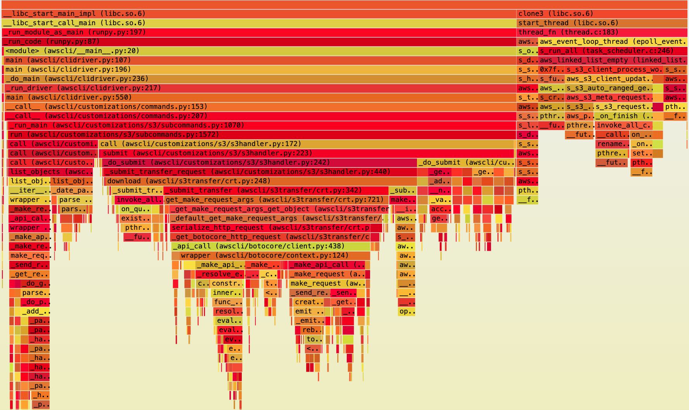
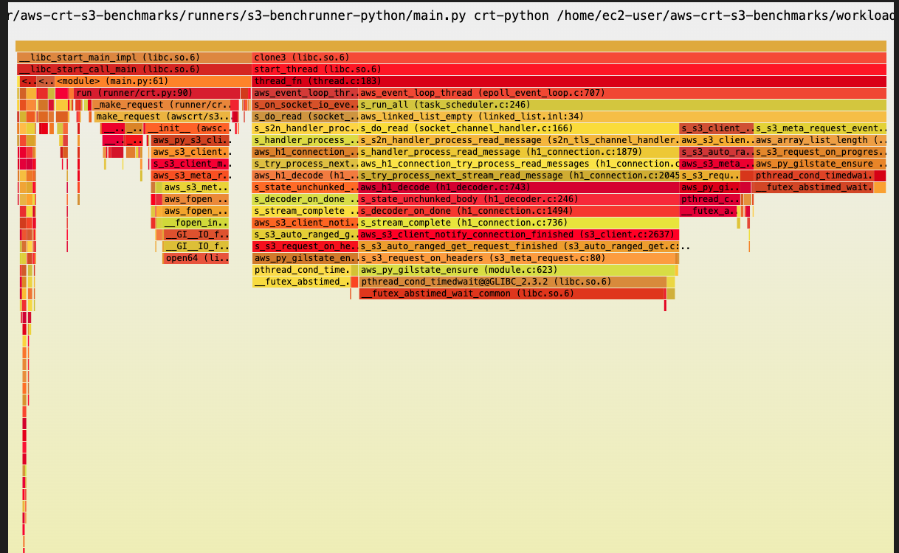
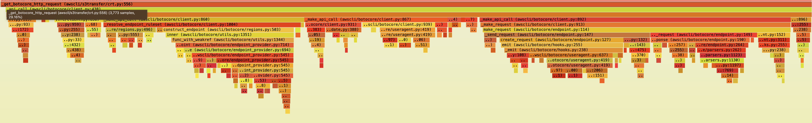
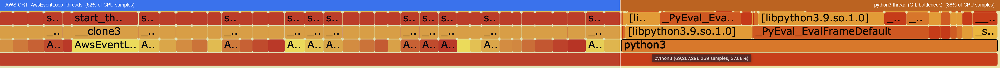
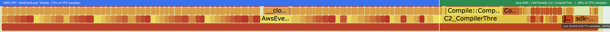
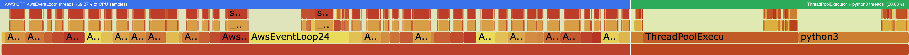

Throughput comparison of several S3 clients and a step-by-step flame graph analysis of why the AWS CLI is slower than competing tools — and what it takes to close the gap. Workload: 10,000 × 1 MiB files (~10 GiB total). Instance: c5n.18xlarge (x86).
All runs: 10,000 × 1 MiB files, concurrency 500,
bucket in us-west-2, instance c5n.18xlarge (x86).
| Client | Type | Upload | Download | Upload | Download |
|---|---|---|---|---|---|
| crt-python | Python SDK library | 21.8 Gb/s | 54.6 Gb/s 🏆 | ||
| s5cmd | CLI tool (Go) | 19.7 Gb/s | 20.8 Gb/s | ||
| rclone | CLI tool (Go) | 15.4 Gb/s | 18.7 Gb/s | ||
| cli-crt | CLI tool (Python, single-threaded) | 4.8 Gb/s | 3.7 Gb/s |
ListObjects or serialization overhead. The CLI tools (cli-crt,
s5cmd, rclone) all do additional coordination work.
cli-crt is the slowest because that work runs on a
single Python thread under the GIL.
The rest of this page explains why — step by step — using flame graphs.
py-spy profiles of the two extremes placed side-by-side. The contrast is immediate:
crt-python skips ListObjects and serialization entirely — the caller provides
the object list and data lands straight in the callback. cli-crt must do all of that work,
and it all runs on a single Python thread under the GIL.

list_objects and
_get_botocore_http_request (endpoint resolution + per-object
serialization). Only ~25% of samples reach CRT.
All coordination runs on one thread under the GIL.

ListObjects, no serialization layer.
Python spends almost no CPU time; the CRT handles I/O directly in native threads.
Zoomed in: _get_botocore_http_request is the hot function in cli-crt —
this is where per-object endpoint resolution and serialization concentrate.
This frame is entirely absent from the crt-python profile.

cli-crt must do ListObjects + serialization,
how efficiently can it do so?
A fairer comparison is Java Transfer Manager vs cli-crt:
both do ListObjects + per-object serialization + CRT dispatch.
The key difference is that Java distributes that coordination work across many threads,
while cli-crt serializes it all on a single Python thread under the GIL.
Profiling runs below on c5n.18xlarge (x86, concurrency 200) — throughput
differs from the c7gn numbers above, but relative ordering is consistent.
| Client | Download | Relative | Notes |
|---|---|---|---|
| Java — SDK CRT Client | 22.88 Gb/s | Direct CRT + per-object serialization, no ListObjects — upper ceiling |
|
| s5cmd | 14.70 Gb/s | Go CLI; native multi-threading, no GIL | |
| rclone | 13.13 Gb/s | Go CLI; slightly lower than s5cmd on this workload | |
| Java TM CRT (concurrency=250) | 11.42 Gb/s | ListObjects + scheduling; Java 250 threads, CRT concurrency=500 |
|
| Java TM CRT (default concurrency=100) | 8.48 Gb/s | ListObjects + scheduling; Java default 100 threads, CRT concurrency=500 |
|
| cli-crt (current, with GIL) | 3.7 Gb/s | ListObjects + serialization, single-threaded under the GIL |
cli-perf-profile.html: 62.33%, 36 AwsEventLoop threads),
the remaining ~38% is dominated by a single python3 thread
under the GIL running ListObjects, endpoint resolution, and botocore
serialization. That single thread cannot keep pace with 36 CRT I/O threads.
java-tm-crt-default.html), yet deliver
2.3× higher throughput. More native I/O threads means more
objects can be processed concurrently at the CRT layer.
c5n.18xlarge there are
72 vCPUs (36 physical cores × 2 hyperthreads).
The Java SDK queries Runtime.getRuntime().availableProcessors()
which returns the logical (hyper-threaded) count — 72 —
so the CRT is initialized with 72 event loop threads (73 observed including rounding/overhead).
The CRT's own C-level default uses aws_system_info_processor_count()
which returns physical cores only — 36.
This means the CLI and crt-python run with half the I/O threads
that the Java SDK allocates by default.
The screenshots below show the top of each flamegraph. The number of distinct thread columns visible immediately reveals the concurrency difference between the two clients.

cli-default.html)python3 thread under the GIL.
One wide Python column bottlenecks all coordination work.

java-tm-crt-default.html)
All AwsEventLoop* thread entries were extracted from each flamegraph using
analyze_aws_event_loops.py. crt-python-default.html is included as
a ceiling reference — no ListObjects, no serialization, so nearly all CPU goes
directly to native I/O.
| Thread | CPU % |
|---|---|
| AwsEventLoop12 ⚠ outlier | 6.23% |
| AwsEventLoop10 | 4.03% |
| AwsEventLoop17, 6, 29… | 3.47–3.61% |
| remaining 32 threads | 1.49–3.03% each |
| Total | 93.97% |
36 threads, very uniform (1.49–4.03% each). No ListObjects, no serialization. Only ~6% CPU goes elsewhere — this is the CRT ceiling.
| Thread | CPU % |
|---|---|
| AwsEventLoop15 ⚠ outlier | 6.68% |
| AwsEventLoop16 | 2.08% |
| AwsEventLoop24 | 2.03% |
| AwsEventLoop26, 30, 13… | 1.88–1.92% |
| remaining 31 threads | 0.89–1.88% each |
| Total | 62.33% |
36 threads. One outlier (6.68%), rest 0.89–2.08%.
Remaining ~38% = single python3 thread (GIL bottleneck).
| Thread | CPU % |
|---|---|
| AwsEventLoop51 ⚠ outlier | 5.25% |
| AwsEventLoop52 | 1.46% |
| AwsEventLoop23, 19, 2… | 1.30–1.38% |
| AwsEventLoop17, 14, 24… | 1.22–1.25% |
| remaining 68 threads | 0.31–1.21% each |
| Total | 72.29% |
73 threads. One outlier (5.25%), rest 0.31–1.46%. Remaining ~28% = Java SDK / JVM coordination threads, well distributed.
crt-python pushes 94% of CPU into CRT native I/O — that's the ceiling.
The CLI with GIL reaches only 62% because 38% is stuck on one Python thread.
Java TM reaches 72% with 2× more CRT threads and distributed coordination.
Free-threading (Step 3) lifts the CLI to 69%, recovering CPU previously lost to GIL contention.
The natural follow-up: can we close the gap by making cli-crt more parallel?
Two changes were tested together:
(1) a thread pool for per-object serialization dispatch, and
(2) Python 3.14t free-threading (no GIL) so threads can run concurrently.
| Client | Download | Relative | vs baseline |
|---|---|---|---|
| cli-crt (current, with GIL) | 3.7 Gb/s | baseline | |
| cli-crt (free-threading, no GIL) | 5.18 Gb/s | +40% | |
| Java TM CRT (default concurrency=100) — for reference | 8.48 Gb/s | same work tier, mature runtime |
cli-crt from 3.7 → 5.18 Gb/s (+40%)
with no changes to CRT or CLI transfer logic. This puts it in the same performance tier as
the Java Transfer Manager at default concurrency. The remaining gap is Python's
still-maturing free-threading runtime vs Java's mature JVM thread scheduler —
not a CRT problem.
| Thread | CPU % |
|---|---|
| AwsEventLoop24 ⚠ outlier | 11.01% |
| AwsEventLoop23 | 3.21% |
| AwsEventLoop14, 5, 19… | 2.22–2.28% |
| AwsEventLoop33, 11, 26… | 2.07–2.09% |
| remaining 28 threads | 0.73–1.99% each |
| Total | 69.37% |
+7pp vs GIL baseline (62.33% → 69.37%)
Removing the GIL frees up CPU that was previously consumed by Python thread scheduling, allowing more cycles to reach CRT native I/O threads.
AwsEventLoop24 outlier at 11.01% is the largest single-thread outlier across all profiles — the free-threading scheduler is less mature, leading to occasional hot-thread imbalance.
Remaining ~31% = Python free-threading coordination threads (no single-thread bottleneck).
The flamegraph below zooms into the ThreadPoolExecutor row of
cli-freethread-download.html. This pool contains the Python threads that are
supposed to run serialization work in parallel now that the GIL is gone.
cli-perf-profile.html) — 3.7 Gb/s
cli-freethread-download.html) — 5.18 Gb/s
The ThreadPoolExecutor block spans 17.10% of total CPU width.
Of that, only 3.78% has visible frames above it — the rest is idle/sleeping.
| Frame in ThreadPoolExecutor | CPU % |
|---|---|
aws_py_s3_client_make_meta_request — doing S3 work | 0.80% |
__GI___sched_yield — threads actively yielding CPU | 1.37% |
__GI_madvise — memory management | 0.26% |
__new_sem_wait_slow64 — sleeping on semaphore | 0.17% |
| other small frames (page faults, malloc, interrupts) | ~1.18% |
| Active frames total | 3.78% |
| No frames above (idle/sleeping in kernel) | 13.32% |
| Total ThreadPoolExecutor width | 17.10% |
What this means:
Of the 17.10% of CPU time attributed to ThreadPoolExecutor threads,
13.32 percentage points (78% of the pool) show no active frames —
these threads were sampled while sleeping or idle in the kernel, waiting for work.
Only 0.80% of total CPU is threads actually calling
aws_py_s3_client_make_meta_request (doing real S3 dispatch work).
The pool has capacity — it is not CPU-saturated — yet it still can't keep the CRT
event loops fully fed.
Root cause: The thread pool is under-utilized because the rate of new tasks arriving from the serialization pipeline is the bottleneck, not the number of threads. Even with the GIL removed and a thread pool in place, the upstream coordination (object listing, task scheduling) is not producing work fast enough to keep all threads busy.
This is consistent with the Rust TM result (Step 4): even native code at the same concurrency level produces similar throughput. The bottleneck is coordination throughput, not language or thread availability.
Is there room for improvement in the Python implementation?
Yes — the 13.32% idle CPU is recoverable. Since the threads are sleeping waiting for tasks
(not blocked on I/O or the GIL), the fix is to produce tasks faster:
increase ListObjects pagination concurrency, pipeline serialization
ahead of CRT dispatch, or increase the number of objects being scheduled at once.
These are Python-layer architectural changes — no CRT modification needed.
Java achieves higher throughput through exactly this mechanism: more concurrent
scheduling threads keeping more CRT slots in-flight simultaneously.
If the bottleneck were Python's runtime, a Rust-based Transfer Manager
(rust-tm) — native language, no GIL, no JVM warmup — should be dramatically faster.
| Client | Download | Relative | Notes |
|---|---|---|---|
| cli-crt (free-threading, no GIL) | 5.18 Gb/s | Python TM + thread pool, no GIL | |
| rust-tm | ~5.0 Gb/s | Native Rust TM; ListObjects + scheduling, default config |
rust-tm and free-threading cli-crt land at roughly the same throughput.
The bottleneck is coordination concurrency — how many
ListObjects + serialization + CRT dispatch tasks are in flight simultaneously —
not the language runtime. Even in native code, an under-tuned concurrency level in the
Transfer Manager layer delivers no advantage.
| Pattern | Evidence |
|---|---|
| Concurrency beats language | Rust TM ≈ Python free-threading; Java TM gains 35% just by increasing thread count |
| SDK Transfer Managers lag Go CLIs | Java TM (8–11 Gb/s) and rust-tm (~5 Gb/s) fall below s5cmd (14.7 Gb/s) at comparable settings |
| Language overhead is secondary | Free-threading gains 40% for Python; GIL removal alone is insufficient to match Go |
| CRT is not the bottleneck | Gaps disappear when SDK coordination is bypassed: crt-python (54.6 Gb/s) and Java SDK CRT client (22.88 Gb/s) both at the top |
All interactive flamegraphs referenced in the analysis above. py-spy profiles show Python-level call stacks only. perf profiles show the full native call stack including CRT internals, FFI boundaries, and kernel I/O.
Python-level flamegraph of cli-crt. Wide and deep — shows
ListObjects, per-object serialization via _get_botocore_http_request,
and scheduling overhead all on one thread under the GIL. ~75% of samples never reach CRT.
cli-crt with Python 3.14t free-threading (GIL disabled) and a thread pool
for serialization dispatch. Lifts throughput from 3.7 → 5.18 Gb/s (+40%).
AwsEventLoop share rises from 62.33% → 69.37% (+7pp). ThreadPoolExecutor threads
are present but 78% idle — task production rate is the remaining bottleneck.
Python-level flamegraph of crt-python. Very shallow — no ListObjects,
no serialization layer. Python spends almost no CPU time; CRT handles all I/O directly.
This is why crt-python is not a fair baseline comparison for CLI tools.
System-level flamegraph for the standard cli-crt run. Shows the full native
call stack. Despite 36 CRT AwsEventLoop threads consuming 62% of CPU, a single
python3 thread in the remaining 38% is the bottleneck.
System-level flamegraph for the Java Transfer Manager.
Same ListObjects + scheduling work as cli-crt, but with
73 CRT AwsEventLoop threads (vs 36 for CLI) and no single-threaded Python bottleneck.
Delivers 2.3× higher throughput.
System-level flamegraph of crt-python. No ListObjects, no
serialization layer — 93.97% of all CPU goes directly to CRT AwsEventLoop threads.
This is the theoretical ceiling: nearly all CPU doing useful I/O work.
Java AWS SDK v2 CRT-backed HTTP client — no Transfer Manager, no ListObjects.
Per-object serialization overhead only. Represents the upper throughput ceiling for
any SDK client that must do per-object work. Java's JIT and threading handle it efficiently.
perf flamegraphs were generated from
perf record -F 99 --call-graph dwarf and converted to interactive SVG.
The x-axis width is proportional to CPU time; the
y-axis height is call-stack depth.
Colors are arbitrary. Click a frame to zoom; Ctrl+F to search.
py-spy flamegraphs show Python-level call stacks only — native CRT and OS
frames are not visible. Use perf to see native overhead; use py-spy to see Python-layer
hotspots. Comparing the two reveals exactly how much Python vs C contributes to latency.